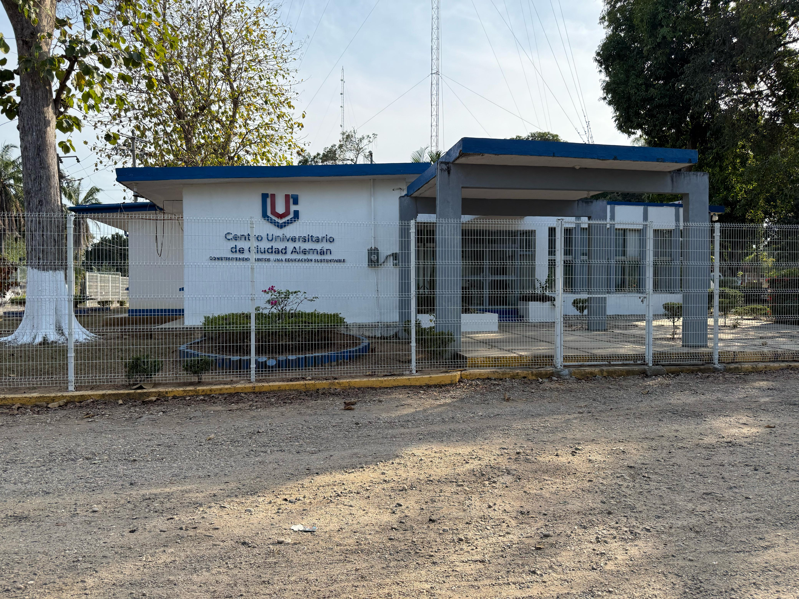
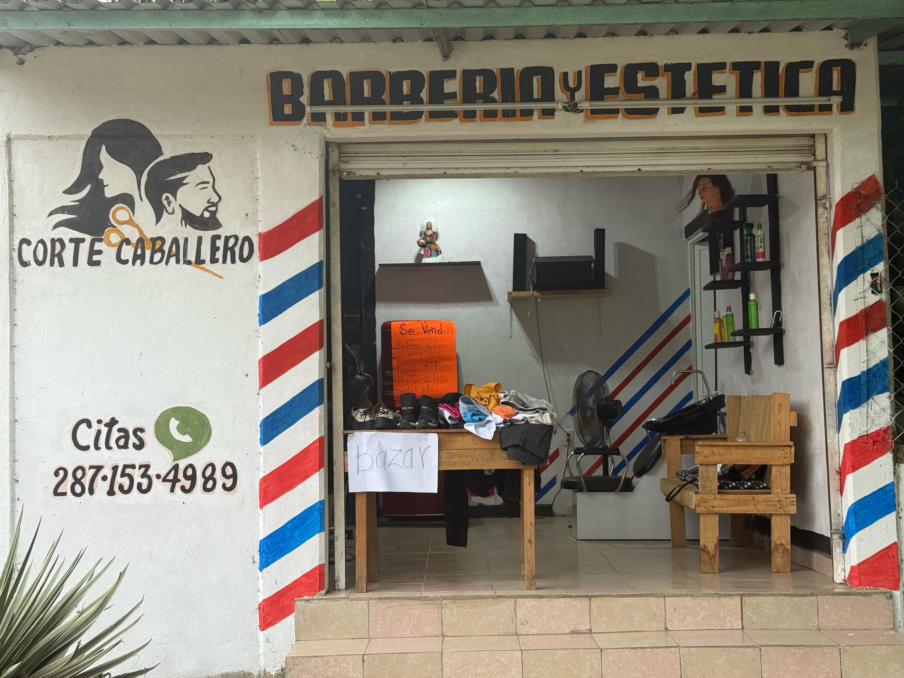
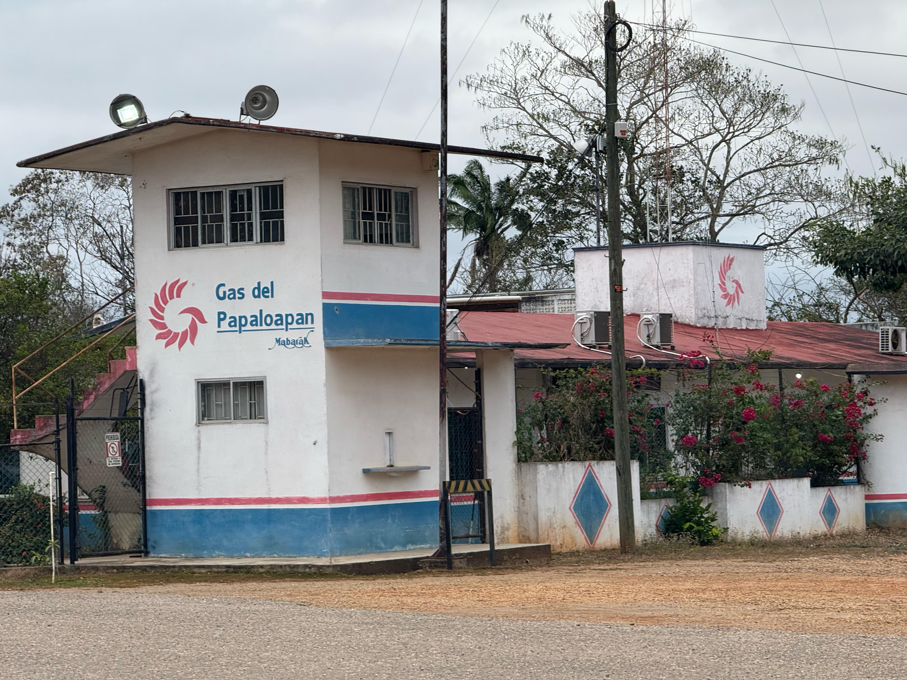
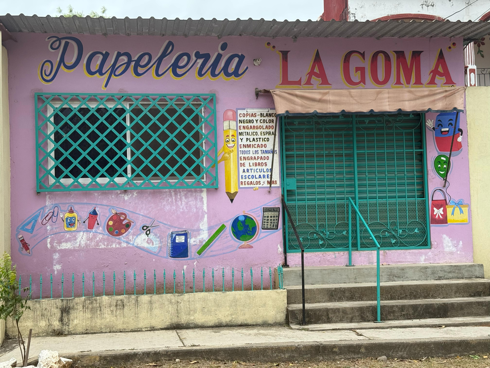
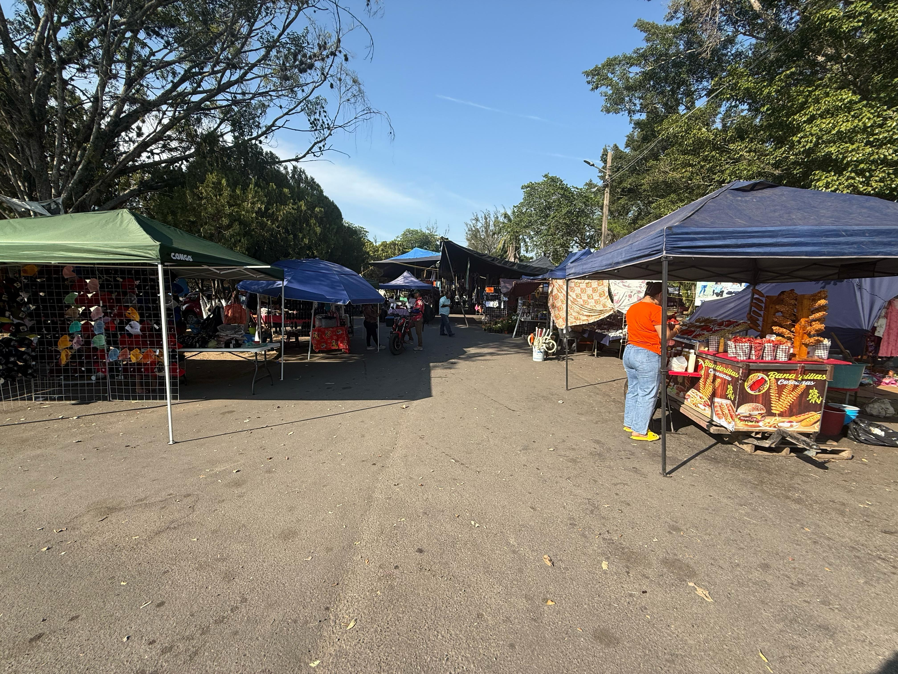

El municipio CD. ALEMAN esta conformado por diferentes instituciones, tiendas, negocios, etc.
Son diferentes formas de ingresos que atribuyen a la economia de CD.ALEMAN y a sus ciudadanos
Esta es la secundaria y el kinder de CD.ALEMAN aportan empleos lo que contribuye a la economia

Este es el ISSSTE de CD.ALEMAN de igual forma aporta a la economia proporcionando empleos a las personas y proporcionando les un salario

Aqui podemos ver a la universidad Filadelfia, esta universidad es de paga lo genera ingresos constantemente, esto contribuye a la economia por el pago de impuestos de igual forma tambien genera empleos

Esta es la financiera del bienestar, aqui se pueden conseguir creditos pequeños, esto aporta en la economia facilitando acceso al credito y apoyar a emprendimientos

Este es uno de los emprendimientos de CD.ALEMAN. Al ser un negocio que genera ingresos contribuye a los impuestos y mueve a la ecomomia

Aqui veremos uno de los negocios mas grandes de CD.ALEMAN. Esta gasera se encarga de proveer gas a todo papaloapan y sus alrededores.
Se considera uno de los mayores negocios que impulsan la economia por su cantidad de ingresos y empleos que genera diariamente

Esta papeleria de igual forma es un emprendimiento que genera ingresos diariamente en la venta de su gran diversidad de articulos

Aqui podemos un tianguis que se establece termporalmente todos los dias jueves, este lugar es uno de los que mas ayudan a la economia con la venta de una gran variedad de
articulos que satisfacen las necesidades de los ciudadanos de CD.ALEMAN y sus alrededores

Tambien contamos con diversas tiendas que estan distribuidas por todo CD.ALEMAN. Esto promueve a la economia por la oferta y demanda de ciertos productos que son comprados por los ciudadanos